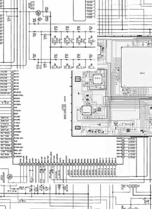
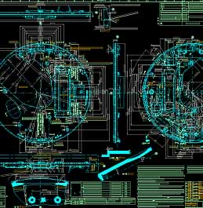
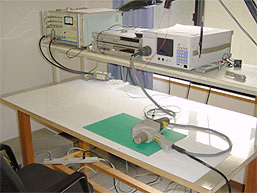
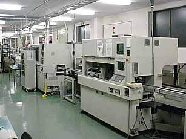
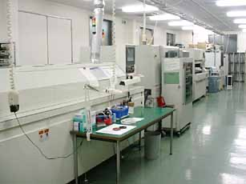
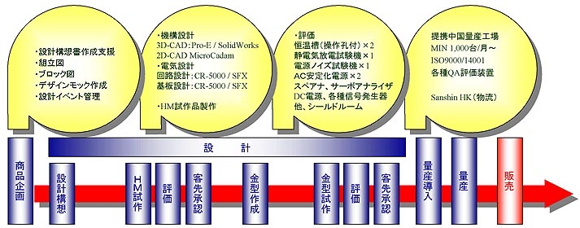

01
設計
電気・機構・パターンの各設計。組み込みFWの開発と評価まで。
01 — Capability
← 横にスクロールできます →

01
DC-DCコンバーター電源、D-Class HP-AMP、DSP／サーボドライバー、AM/FMチューナー。高周波はWi-LAN、Bluetooth、FMトランスミッター。

02
Mentor Graphics SFX T1＆F1、図研 CR5000 SD を使用。高密度設計に対応します。

03
MicroCADAM、Pro/ENGINEER、SolidWorks。ポータブル機器、カーオーディオ、LCDTV、携帯電話外装、防水製品。

04
2ラインの実装機による短納期実装。手載せ実装（リフロー炉使用）、手付実装にも対応します。

05
実装改修作業、BGAリワーク、X線検査。実装のみでも承ります。

06
EMC／EMI 不要輻射、EMS 電力妨害、ESD 静電誤動作、内部ノイズ妨害対策。
02 — Process
こんなものを造りたいという段階からのご相談も、 工程の一部だけのご依頼も承ります。
01
電気・機構・パターンの各設計。組み込みFWの開発と評価まで。
02
部品と基板の両方を調達します。自社在庫も利用できます。
03
2ラインの実装機。試験実装や開発案件のご相談も承ります。
03 — Lead time
貫通基板の目安です。「1.1日」の .1 は、前日17:00までに基板データを出力いただく場合を表します。
| 層構成 | 最短 | 通常 | 価格重視 |
|---|---|---|---|
| 片面 | 1日 | 1.1日 | 3日 |
| 両面 | 1.1日 | 1.1日 | 4日 |
| 4層 | 1.1日 | 2.1日 | 5日 |
| 6層 | 1.1日 | 3.1日 | 6日 |
| 8層 | 1.1日 | 4.1日 | 7日 |
| 10層〜 | 要相談 | 要相談 | 要相談 |
| 層構成 | 最短 | 価格重視 | 日本着 追加 |
|---|---|---|---|
| 両面 | 3日 | 7日 | ＋2〜3日 |
| 4層 | 3日 | 10日 | ＋2〜3日 |
| 6層 | 5日 | 10日 | ＋2〜3日 |
| 8層 | 5日 | 12日 | ＋2〜3日 |
| 10層 | 7日 | 15日 | ＋2〜3日 |
| 12〜16層 | 10日 | 20日 | ＋2〜3日 |
| 16〜20層 | 15日 | — | ＋2〜3日 |
ビルドアップ基板は4層（1-2-1）・6層（1-4-1）・6層（2-2-2）で10〜13日が目安です。 金フラッシュ、樹脂埋め基板は上表に1日追加。銀スルー基板は銀の硬化に時間がかかるため最短3日です。
04 — Mounting
短納期・高密度実装を得意としています。以下はいずれも実績のある条件です。
0.5 ピッチ
CSP・BGA 実装実績
0603
チップ部品 実装実績
0.4 mm
リードピッチ 実装実績
0.18 mm
間隔 実装実績
50×50 – 395×250
基板サイズ（mm）
0.3 – 2.6
板厚（mm）
40 – 50 枚
1日実装（部品点数500点前後）
2000年6月〜
無鉛実装
いずれも自社の設計図・設備です。
05 — FAQ
06 — Company
設計・実装は福島、営業と開発は東京・宇都宮に置いています。
50音順・敬称略。
SONY株式会社様のグリーンパートナー認定を受けています。
07 — Contact